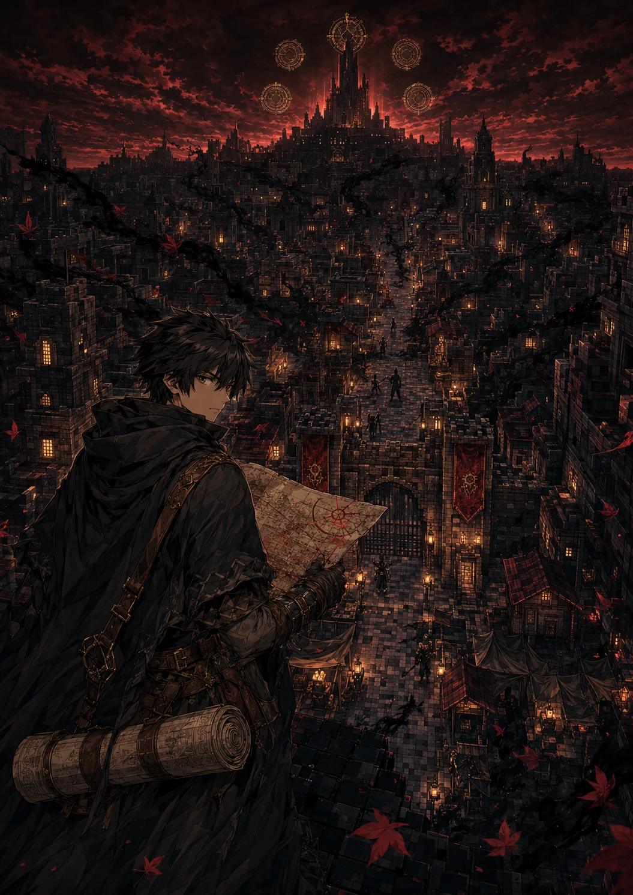
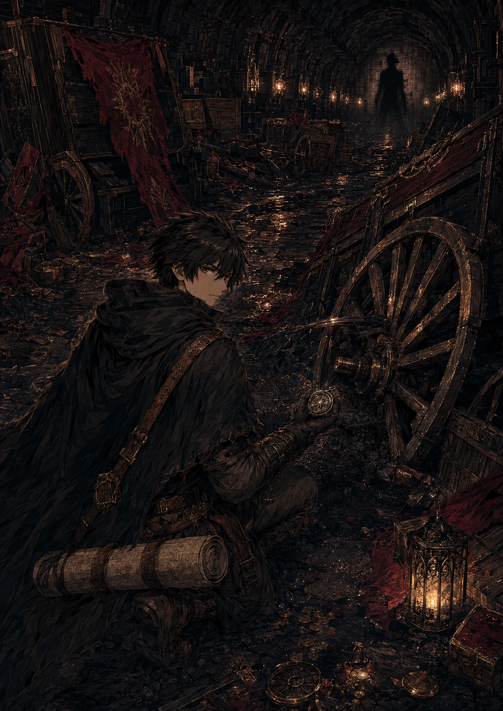

KAGE NO ŌKOKU MANGA SERİSİ
GÖLGESİZ TAHT KIRIK MÜHÜRLER
On iki halkı koruduğu sanılan mühürler kırılıyor. Kaybolan imparator, unutulan on üçüncü halk ve canlı krallığın kaderi manga sayfalarında birleşiyor.
CİLT I • GÖLGESİZ GECE22SAYFA 2BÖLÜM 12IRK ÖYKÜSÜ 72PLANLANAN BÖLÜM BÖLÜM 01 BÖLÜM 02 SIRADAKİ
İlk iki bölüm yayınlandı
İmparator Kageharu’nun gölgesi sahibinden ayrılır ve ilk mühür parçalanır. Başkent uzun geceye girerken Ren, kayıp kardeşinin haritasında sarayın altında saklanan ikinci bir yol bulur.
Tahtın Gölgesi
Yıl dönümü töreninde İnsan Mührü kırılır ve imparator Gölge Tahtı’nın içinde kaybolur.
Son Kervanın Haritası
Ren, kardeşi Haru’nun pusulasını parçalanmış kraliyet kervanında bulur.
Taşkıran Damgası
Borin, kırık mühürde ailesine ait yasak dövme işaretini keşfedecek.
ÇEVRİM İÇİ OKU


ALTI CİLTLİK SERİ
Gölgesiz Gece
İmparatorun kayboluşu ve ilk mühür.
On İki Soyun Yolları
Her ırkın kendi yurdu ve kırılan geçmişi.
Hanedanların Mevsimi
Taht adayları ve diplomasi.
Ustaların Sessizliği
Meslekler ve kadim öğretiler.
Kırık Dünya
Kıtlıklar, istilalar ve kervanlar.
On Üçüncü Mühür
Unutulan halk ve son seçim.